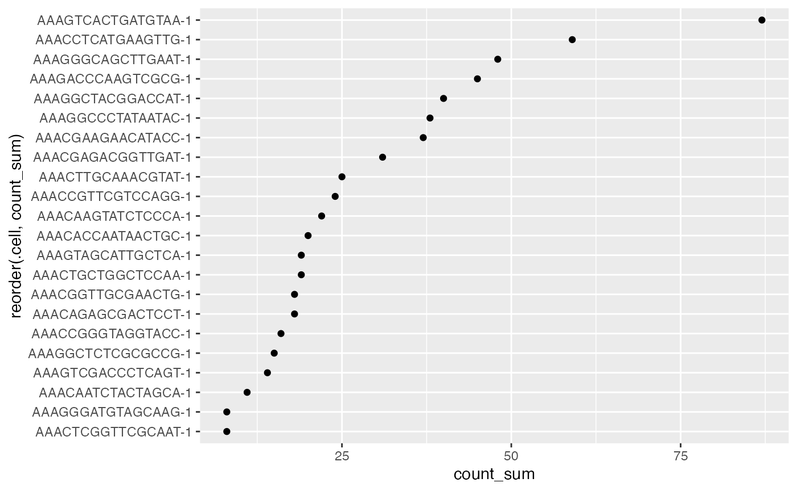

Overview
William Hutchison
WEHI - Walter and Eliza Hall Institute of Medical Researchhutchison.w@wehi.edu.au
Stefano Mangiola
WEHI - Walter and Eliza Hall Institute of Medical ResearchSource:
vignettes/overview.Rmd
overview.RmdAbstract
A brief overview of the tidySpatialExperiment package - demonstrating the SpatialExperiment-tibble abstraction, compatibility with the tidyverse ecosystem, compatibility with the tidyomics ecosystem and a few helpful utility functions.
Introduction
tidySpatialExperiment provides a bridge between the SpatialExperiment [@righelli2022spatialexperiment] package and the tidyverse [@wickham2019welcome] ecosystem. It creates an invisible layer that allows you to interact with a SpatialExperiment object as if it were a tibble; enabling the use of functions from dplyr, tidyr, ggplot2 and plotly. But, underneath, your data remains a SpatialExperiment object.
tidySpatialExperiment also provides three additional utility functions.
Functions and utilities
| Package | Functions available |
|---|---|
SpatialExperiment |
All |
dplyr |
arrange,bind_rows, bind_cols,
distinct, filter, group_by,
summarise, select, mutate,
rename, left_join, right_join,
inner_join, slice, sample_n,
sample_frac, count,
add_count
|
tidyr |
nest, unnest, unite,
separate, extract,
pivot_longer
|
ggplot2 |
ggplot |
plotly |
plot_ly |
| Utility | Description |
|---|---|
as_tibble |
Convert cell-wise information to a tbl_df
|
join_features |
Combine cell-wise and feature-wise information into a
tbl_df
|
aggregate_cells |
Aggregate cell-feature abundance into a pseudobulk
SummarizedExperiment
|
SpatialExperiment-tibble abstraction
A SpatialExperiment object represents observations (cells) as columns
and variables (features) as rows, as is the Bioconductor convention.
Additional information about the cells is accessed through the
reducedDims, colData and
spatialCoords functions.
tidySpatialExperiment provides a SpatialExperiment-tibble
abstraction, representing cells as rows and features as columns, as is
the tidyverse convention. colData and
spatialCoords are appended as columns to the same
abstraction, allowing easy interaction with this additional data.
Installation
You can install the development version of tidySpatialExperiment from GitHub with:
install.packages("devtools")
devtools::install_github("william-hutchison/tidySpatialExperiment")Load data
Here, we load and view an example SpatialExperiment object. The output we see is of the SpatialExperiment-tibble abstraction.
# Load example SpatialExperiment object
library(tidySpatialExperiment)## Warning: package 'S4Vectors' was built under R version 4.3.2## Warning: package 'GenomeInfoDb' was built under R version 4.3.2
example(read10xVisium)## Warning: no function found corresponding to methods exports from 'HDF5Array'
## for: 'extract_sparse_array'## Warning: multiple methods tables found for 'sparsity'View data
# View the SpatialExperiment-tibble abstraction
spe## # A SpatialExperiment-tibble abstraction: 99 × 7
## # Features=50 | Cells=99 | Assays=counts
## .cell in_tissue array_row array_col sample_id pxl_col_in_fullres
## <chr> <lgl> <int> <int> <chr> <int>
## 1 AAACAACGAATAGTTC-1 FALSE 0 16 section1 2312
## 2 AAACAAGTATCTCCCA-1 TRUE 50 102 section1 8230
## 3 AAACAATCTACTAGCA-1 TRUE 3 43 section1 4170
## 4 AAACACCAATAACTGC-1 TRUE 59 19 section1 2519
## 5 AAACAGAGCGACTCCT-1 TRUE 14 94 section1 7679
## 6 AAACAGCTTTCAGAAG-1 FALSE 43 9 section1 1831
## 7 AAACAGGGTCTATATT-1 FALSE 47 13 section1 2106
## 8 AAACAGTGTTCCTGGG-1 FALSE 73 43 section1 4170
## 9 AAACATGGTGAGAGGA-1 FALSE 62 0 section1 1212
## 10 AAACATTTCCCGGATT-1 FALSE 61 97 section1 7886
## # ℹ 89 more rows
## # ℹ 1 more variable: pxl_row_in_fullres <int>However, our data maintains its status as a SpatialExperiment object. Therefore, we have access to all SpatialExperiment functions.
spe |>
colData() |>
head()## DataFrame with 6 rows and 4 columns
## in_tissue array_row array_col sample_id
## <logical> <integer> <integer> <character>
## AAACAACGAATAGTTC-1 FALSE 0 16 section1
## AAACAAGTATCTCCCA-1 TRUE 50 102 section1
## AAACAATCTACTAGCA-1 TRUE 3 43 section1
## AAACACCAATAACTGC-1 TRUE 59 19 section1
## AAACAGAGCGACTCCT-1 TRUE 14 94 section1
## AAACAGCTTTCAGAAG-1 FALSE 43 9 section1
spe |>
spatialCoords() |>
head()## pxl_col_in_fullres pxl_row_in_fullres
## AAACAACGAATAGTTC-1 2312 1252
## AAACAAGTATCTCCCA-1 8230 7237
## AAACAATCTACTAGCA-1 4170 1611
## AAACACCAATAACTGC-1 2519 8315
## AAACAGAGCGACTCCT-1 7679 2927
## AAACAGCTTTCAGAAG-1 1831 6400
spe |>
imgData()## DataFrame with 2 rows and 4 columns
## sample_id image_id data scaleFactor
## <character> <character> <list> <numeric>
## 1 section1 lowres #### 0.0510334
## 2 section2 lowres #### 0.0510334Integration with the tidyverse ecosystem
Manipulate with dplyr
Most functions from dplyr are available for use with the
SpatialExperiment-tibble abstraction. For example, filter
can be used to select cells by a variable of interest.
spe |>
filter(array_col < 5)## # A SpatialExperiment-tibble abstraction: 6 × 7
## # Features=50 | Cells=6 | Assays=counts
## .cell in_tissue array_row array_col sample_id pxl_col_in_fullres
## <chr> <lgl> <int> <int> <chr> <int>
## 1 AAACATGGTGAGAGGA-1 FALSE 62 0 section1 1212
## 2 AAACGAAGATGGAGTA-1 FALSE 58 4 section1 1487
## 3 AAAGAATGACCTTAGA-1 FALSE 64 2 section1 1349
## 4 AAACATGGTGAGAGGA-1 FALSE 62 0 section2 1212
## 5 AAACGAAGATGGAGTA-1 FALSE 58 4 section2 1487
## 6 AAAGAATGACCTTAGA-1 FALSE 64 2 section2 1349
## # ℹ 1 more variable: pxl_row_in_fullres <int>And mutate can be used to add new variables, or modify
the value of an existing variable.
## # A SpatialExperiment-tibble abstraction: 99 × 8
## # Features=50 | Cells=99 | Assays=counts
## .cell in_tissue array_row array_col sample_id in_region pxl_col_in_fullres
## <chr> <lgl> <int> <int> <chr> <lgl> <int>
## 1 AAACAAC… FALSE 0 16 section1 FALSE 2312
## 2 AAACAAG… TRUE 50 102 section1 FALSE 8230
## 3 AAACAAT… TRUE 3 43 section1 TRUE 4170
## 4 AAACACC… TRUE 59 19 section1 FALSE 2519
## 5 AAACAGA… TRUE 14 94 section1 FALSE 7679
## 6 AAACAGC… FALSE 43 9 section1 FALSE 1831
## 7 AAACAGG… FALSE 47 13 section1 FALSE 2106
## 8 AAACAGT… FALSE 73 43 section1 FALSE 4170
## 9 AAACATG… FALSE 62 0 section1 FALSE 1212
## 10 AAACATT… FALSE 61 97 section1 FALSE 7886
## # ℹ 89 more rows
## # ℹ 1 more variable: pxl_row_in_fullres <int>Tidy with tidyr
Most functions from tidyr are also available. Here, nest
is used to group the data by sample_id, and
unnest is used to ungroup the data.
# Nest the SpatialExperiment object by sample_id
spe_nested <-
spe |>
nest(data = -sample_id)
# View the nested SpatialExperiment object
spe_nested## # A tibble: 2 × 2
## sample_id data
## <chr> <list>
## 1 section1 <SptlExpr[,50]>
## 2 section2 <SptlExpr[,49]>
# Unnest the nested SpatialExperiment objects
spe_nested |>
unnest(data)## # A SpatialExperiment-tibble abstraction: 99 × 7
## # Features=50 | Cells=99 | Assays=counts
## .cell in_tissue array_row array_col sample_id pxl_col_in_fullres
## <chr> <lgl> <int> <int> <chr> <int>
## 1 AAACAACGAATAGTTC-1 FALSE 0 16 section1 2312
## 2 AAACAAGTATCTCCCA-1 TRUE 50 102 section1 8230
## 3 AAACAATCTACTAGCA-1 TRUE 3 43 section1 4170
## 4 AAACACCAATAACTGC-1 TRUE 59 19 section1 2519
## 5 AAACAGAGCGACTCCT-1 TRUE 14 94 section1 7679
## 6 AAACAGCTTTCAGAAG-1 FALSE 43 9 section1 1831
## 7 AAACAGGGTCTATATT-1 FALSE 47 13 section1 2106
## 8 AAACAGTGTTCCTGGG-1 FALSE 73 43 section1 4170
## 9 AAACATGGTGAGAGGA-1 FALSE 62 0 section1 1212
## 10 AAACATTTCCCGGATT-1 FALSE 61 97 section1 7886
## # ℹ 89 more rows
## # ℹ 1 more variable: pxl_row_in_fullres <int>Plot with ggplot2
The ggplot function can be used to create a plot from a
SpatialExperiment object. This example also demonstrates how tidy
operations can be combined to build up more complex analysis. It should
be noted that helper functions such aes are not included
and should be imported from ggplot2.
spe |>
filter(sample_id == "section1" & in_tissue) |>
# Add a column with the sum of feature counts per cell
mutate(count_sum = purrr::map_int(.cell, ~
spe[, .x] |>
counts() |>
sum()
)) |>
# Plot with tidySpatialExperiment and ggplot2
ggplot(ggplot2::aes(x = reorder(.cell, count_sum), y = count_sum)) +
ggplot2::geom_point() +
ggplot2::coord_flip()
Integration with the tidyomics ecosystem
Interactively select cells with tidygate
Different packages from the tidyomics ecosystem are easy to use together. When run in the R Console, the following code will lunch tidygate to interactively gate cells based on their array location.
spe_regions <-
spe |>
filter(sample_id == "section1") |>
mutate(region = tidygate::gate_chr(array_col, array_row))The gated cells can then be divided into pseudobulks within a
SummarizedExperiment object using tidySpatialExperiment’s
aggregate_cells utility function.
spe_regions_aggregated <-
spe_regions |>
aggregate_cells(region)Important considerations
Read-only columns
Removing the .cell column will return a tibble. This is
consistent with the behaviour in other tidyomics packages.
## tidySpatialExperiment says: Key columns are missing. A data frame is returned for independent data analysis.## # A tibble: 6 × 4
## in_tissue array_row array_col sample_id
## <lgl> <int> <int> <chr>
## 1 FALSE 0 16 section1
## 2 TRUE 50 102 section1
## 3 TRUE 3 43 section1
## 4 TRUE 59 19 section1
## 5 TRUE 14 94 section1
## 6 FALSE 43 9 section1The sample_id column cannot be removed with tidyverse
functions, and can only be modified if the changes are accepted by
SpatialExperiment’s colData function.
# sample_id is not removed, despite the user's request
spe |>
select(-sample_id)## # A SpatialExperiment-tibble abstraction: 99 × 7
## # Features=50 | Cells=99 | Assays=counts
## .cell in_tissue array_row array_col sample_id pxl_col_in_fullres
## <chr> <lgl> <int> <int> <chr> <int>
## 1 AAACAACGAATAGTTC-1 FALSE 0 16 section1 2312
## 2 AAACAAGTATCTCCCA-1 TRUE 50 102 section1 8230
## 3 AAACAATCTACTAGCA-1 TRUE 3 43 section1 4170
## 4 AAACACCAATAACTGC-1 TRUE 59 19 section1 2519
## 5 AAACAGAGCGACTCCT-1 TRUE 14 94 section1 7679
## 6 AAACAGCTTTCAGAAG-1 FALSE 43 9 section1 1831
## 7 AAACAGGGTCTATATT-1 FALSE 47 13 section1 2106
## 8 AAACAGTGTTCCTGGG-1 FALSE 73 43 section1 4170
## 9 AAACATGGTGAGAGGA-1 FALSE 62 0 section1 1212
## 10 AAACATTTCCCGGATT-1 FALSE 61 97 section1 7886
## # ℹ 89 more rows
## # ℹ 1 more variable: pxl_row_in_fullres <int>
# This change maintains separation of sample_ids and is permitted
spe |>
mutate(sample_id = stringr::str_c(sample_id, "_modified")) |>
head()## # A SpatialExperiment-tibble abstraction: 99 × 7
## # Features=6 | Cells=99 | Assays=counts
## .cell in_tissue array_row array_col sample_id pxl_col_in_fullres
## <chr> <lgl> <int> <int> <chr> <int>
## 1 AAACAACGAATAGTTC-1 FALSE 0 16 section1… 2312
## 2 AAACAAGTATCTCCCA-1 TRUE 50 102 section1… 8230
## 3 AAACAATCTACTAGCA-1 TRUE 3 43 section1… 4170
## 4 AAACACCAATAACTGC-1 TRUE 59 19 section1… 2519
## 5 AAACAGAGCGACTCCT-1 TRUE 14 94 section1… 7679
## 6 AAACAGCTTTCAGAAG-1 FALSE 43 9 section1… 1831
## 7 AAACAGGGTCTATATT-1 FALSE 47 13 section1… 2106
## 8 AAACAGTGTTCCTGGG-1 FALSE 73 43 section1… 4170
## 9 AAACATGGTGAGAGGA-1 FALSE 62 0 section1… 1212
## 10 AAACATTTCCCGGATT-1 FALSE 61 97 section1… 7886
## # ℹ 89 more rows
## # ℹ 1 more variable: pxl_row_in_fullres <int>
# This change does not maintain separation of sample_ids and produces an error
spe |>
mutate(sample_id = "new_sample")## Error in .local(x, ..., value): Number of unique 'sample_id's is 2, but 1 was provided.The pxl_col_in_fullres and
px_row_in_fullres columns cannot be removed or modified
with tidyverse functions. This is consistent with the behaviour
of dimension reduction data in other tidyomics packages.
# Attempting to remove pxl_col_in_fullres produces an error
spe |>
select(-pxl_col_in_fullres)## Error in `select_helper()`:
## ! Can't subset columns that don't exist.
## ✖ Column `pxl_col_in_fullres` doesn't exist.
# Attempting to modify pxl_col_in_fullres produces an error
spe |>
mutate(pxl_col_in_fullres)## Error in `dplyr::mutate()`:
## ℹ In argument: `pxl_col_in_fullres`.
## Caused by error:
## ! object 'pxl_col_in_fullres' not foundSession info
## R version 4.3.1 (2023-06-16)
## Platform: x86_64-apple-darwin20 (64-bit)
## Running under: macOS Ventura 13.5
##
## Matrix products: default
## BLAS: /Library/Frameworks/R.framework/Versions/4.3-x86_64/Resources/lib/libRblas.0.dylib
## LAPACK: /Library/Frameworks/R.framework/Versions/4.3-x86_64/Resources/lib/libRlapack.dylib; LAPACK version 3.11.0
##
## locale:
## [1] en_US.UTF-8/en_US.UTF-8/en_US.UTF-8/C/en_US.UTF-8/en_US.UTF-8
##
## time zone: Australia/Melbourne
## tzcode source: internal
##
## attached base packages:
## [1] stats4 stats graphics grDevices utils datasets methods
## [8] base
##
## other attached packages:
## [1] tidySpatialExperiment_0.99.8 tidySummarizedExperiment_1.12.0
## [3] ggplot2_3.4.4 ttservice_0.4.0
## [5] tidyr_1.3.0 dplyr_1.1.4
## [7] tidySingleCellExperiment_1.13.3 SpatialExperiment_1.12.0
## [9] SingleCellExperiment_1.24.0 SummarizedExperiment_1.32.0
## [11] Biobase_2.62.0 GenomicRanges_1.54.1
## [13] GenomeInfoDb_1.38.5 IRanges_2.36.0
## [15] S4Vectors_0.40.2 BiocGenerics_0.48.1
## [17] MatrixGenerics_1.14.0 matrixStats_1.2.0
## [19] BiocStyle_2.28.1
##
## loaded via a namespace (and not attached):
## [1] bitops_1.0-7 rlang_1.1.2
## [3] magrittr_2.0.3 compiler_4.3.1
## [5] DelayedMatrixStats_1.22.6 systemfonts_1.0.5
## [7] vctrs_0.6.5 stringr_1.5.1
## [9] pkgconfig_2.0.3 crayon_1.5.2
## [11] fastmap_1.1.1 magick_2.8.2
## [13] XVector_0.42.0 ellipsis_0.3.2
## [15] labeling_0.4.3 scuttle_1.10.3
## [17] utf8_1.2.4 rmarkdown_2.25
## [19] ragg_1.2.7 purrr_1.0.2
## [21] xfun_0.41 beachmat_2.16.0
## [23] zlibbioc_1.48.0 cachem_1.0.8
## [25] jsonlite_1.8.8 highr_0.10
## [27] rhdf5filters_1.12.1 DelayedArray_0.28.0
## [29] Rhdf5lib_1.24.1 BiocParallel_1.36.0
## [31] parallel_4.3.1 R6_2.5.1
## [33] RColorBrewer_1.1-3 bslib_0.6.1
## [35] stringi_1.8.3 limma_3.56.2
## [37] jquerylib_0.1.4 Rcpp_1.0.11
## [39] bookdown_0.37 knitr_1.45
## [41] R.utils_2.12.3 Matrix_1.6-4
## [43] tidyselect_1.2.0 rstudioapi_0.15.0
## [45] abind_1.4-5 yaml_2.3.8
## [47] codetools_0.2-19 lattice_0.22-5
## [49] tibble_3.2.1 withr_2.5.2
## [51] evaluate_0.23 desc_1.4.3
## [53] pillar_1.9.0 BiocManager_1.30.22
## [55] plotly_4.10.3 generics_0.1.3
## [57] RCurl_1.98-1.13 sparseMatrixStats_1.12.2
## [59] munsell_0.5.0 scales_1.3.0
## [61] glue_1.6.2 lazyeval_0.2.2
## [63] tools_4.3.1 data.table_1.14.10
## [65] locfit_1.5-9.8 fs_1.6.3
## [67] rhdf5_2.44.0 grid_4.3.1
## [69] crosstalk_1.2.1 edgeR_3.42.4
## [71] DropletUtils_1.20.0 colorspace_2.1-0
## [73] GenomeInfoDbData_1.2.11 HDF5Array_1.28.1
## [75] cli_3.6.2 textshaping_0.3.7
## [77] fansi_1.0.6 S4Arrays_1.2.0
## [79] viridisLite_0.4.2 gtable_0.3.4
## [81] R.methodsS3_1.8.2 sass_0.4.8
## [83] digest_0.6.33 dqrng_0.3.2
## [85] SparseArray_1.2.3 farver_2.1.1
## [87] rjson_0.2.21 htmlwidgets_1.6.4
## [89] memoise_2.0.1 htmltools_0.5.7
## [91] pkgdown_2.0.7 R.oo_1.25.0
## [93] lifecycle_1.0.4 httr_1.4.7